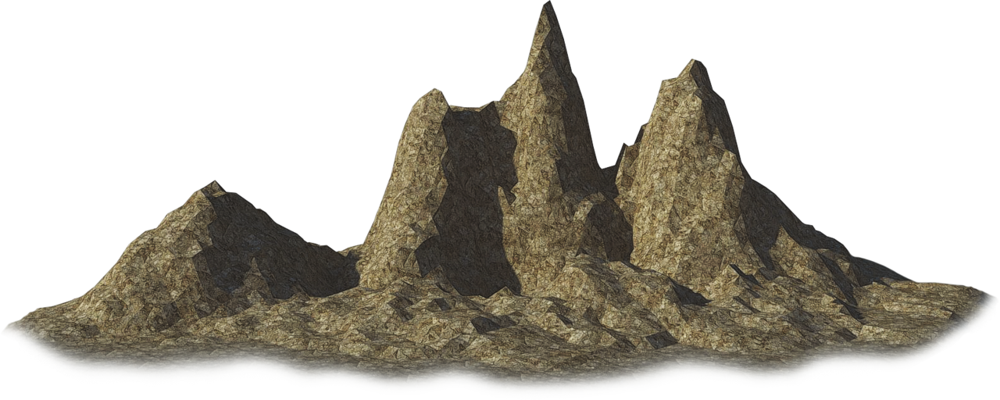
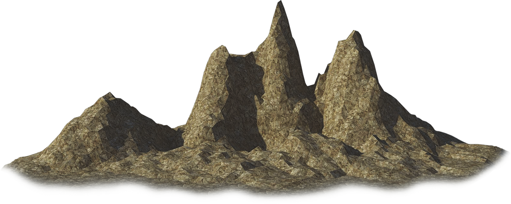

I'm Yara.
a programmer.

a programmer.

I'm a Web developer.This is first page for me.I❤️Coffee ,reading and music
Secure a position in a creative and dynamic work environment where I can apply my skills in web design.
• Web design
• HTML, CSS, XML, bootstrap
• MS Windows / Mac OS X / Linux
• Microsoft Office Suite
• Languages: Arabic (Native), English (Very Good)
• Excellent time management skills
• Strong interpersonal and communication skills
• Analytical with excellent creative problem-solving skills
• Extremely organized and detail oriented
BS in Information Technology Computer Science College| Arab Open University Feb 2015 – May 2019•
My graduation project: Helper Eyes is an application based on Optical Character Recognition (OCR).
This is the process of classifying optical pattern contained in a digital image.
Character recognition is achieved through segmentation, feature extraction and classification.
Helper Eyes offers blind or visually impaired
the ability to obtain an image of printed text and has it spoken aloud.
GPA: 2.52
I Am a fresh graduate I have developed my talent, experience in my university, Iam seeking to reach more and more experience in my work field.
• A member of the Student Council _ AOU 2016 – 2017
• Vice president and vice head PR Committee at Enactus 2017
• Logistics Head 2018
• Academic Head, part of Enactus 2019
• I was selected by the university administration
to make a video call with the Kuwait branch for 3 times and was selected to receive the British delegation.
• Reading developing books.
• Swimming